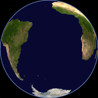
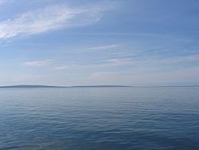

Oceanul Atlantic este al doilea ocean ca mărime de pe Pământ, acoperind aproape 20% din suprafața sa. Numele oceanului, care se trage de la mitologia greacă, înseamnă Marea lui Atlas.
Limite
Atlanticul este mărginit de America de Nord și America de Sud, în vest, și Europa și Africa, în est. Este legat de Oceanul Pacific prin Oceanul Arctic în nord, și prin Pasajul Drake în sud. În plus, este legat artificial de Pacific prin Canalul Panama. Linia de demarcație dintre Oceanul Atlantic și Oceanul Indian este la meridianul 20°E. Atlanticul este separat de Oceanul Arctic printr-o linie care duce de la Groenlanda, prin insulele Svalbard până în nordul Norvegiei.
Atlanticul de Nord
Atlanticul de Nord se întinde în emisfera nordică de la ecuator până la Oceanul Arctic. El cuprinde insulele Capului Verde, insulele Canare, Madeira, insulele Azore, Bermuda, Färöer, Islanda, Groenlanda precum și Terra Nova. Este delimitat prin ecuator de Atlanticul de Sud.
Atlanticul de Sud
Oceanul Atlantic
Pentru detalii, vezi: Oceanul Atlantic de Sud.
Atlanticul de Sud este regiunea Atlanticului situată la sud de ecuator, între continentele America de Sud, Africa Occidentală și Africa Sudică. La sud, Atlanticul este limitat de Oceanul Antarctic și Antarctida.
Insulele principale
Insulele Falkland
Georgia de Sud și Insulele Sandwich de Sud
São Tomé și Príncipe
Annobón (din Golful Guinea)
Ascension
Tristan da Cunha
Sfânta Elena
Mările care fac parte din Oceanul Atlantic (sunt considerate adiacente) includ: Marea Caraibelor, Marea Mediterană, Marea Neagră, Marea Nordului, Marea Labrador și Marea Baltică. Insulele importante din Oceanul Atlantic sunt: Insulele Faroe, Svalbard, Groenlanda, Islanda, Rockall, Marea Britanie, Irlanda, Fernando de Noronha, Insulele Azore, Insulele Madeira, Insulele Canare, Insulele Capul Verde, São Tomé și Príncipe, Newfoundland, Bermuda, Indiile de Vest, Ascension, Sf. Elena, Martin Vaz, Tristan da Cunha, Insulele Falkland și Insula Georgia de Sud.
Conținut
Incluzând mările adiacente, Oceanul Atlantic ocupă o suprafață de 106.400.000 km², iar fără aceste mări, are o suprafață de 82.400.0000 km². Volumul oceanului, cu mările adiacente, este de 354.700.000 km³, iar fără ele este de 323.600.000 l. Adâncimea medie a Atlanticului este de 3.332 m (incluzând mările adiacente) sau 3.926 (fără mările adiacente). Cel mai adânc punct este Groapa Puerto Rico de 9.219m . Lățimea oceanului variază de la 2.848 km între Brazilia și Liberia, până la 4.830 km între Statele Unite ale Americii și nordul Africii.
Mările care fac parte din Oceanul Atlantic (sunt considerate adiacente) includ: Marea Caraibelor, Marea Mediterană, Marea Neagră, Marea Nordului, Marea Labrador și Marea Baltică. Insulele importante din Oceanul Atlantic sunt: Insulele Faroe, Svalbard, Groenlanda, Islanda, Rockall, Marea Britanie, Irlanda, Fernando de Noronha, Insulele Azore, Insulele Madeira, Insulele Canare, Insulele Capul Verde, São Tomé și Príncipe, Newfoundland, Bermuda, Indiile de Vest, Ascension, Sf. Elena, Martin Vaz, Tristan da Cunha, Insulele Falkland și Insula Georgia de Sud.
Înțeleptul grec Platon afirma că în Atlantic ar fi existat un continent, acum dispărut: Atlantida, așa cum ar fi existat Pacifida în Pacific.
Viețuitoarele marine
Studiul asupra viețuitoarelor mării arată că au nevoie de circa 20% oxigen și 80% apă pentru asigurarea unei vieți fără riscuri și pentru digerarea hranei.
Teritoriu și Climat.
Viețuitoarele marine au nevoie de un teritoriu care să constituie un climat variabil.Animalele marine își schimbă teritoriul în funcție de anotimp și temperatură.Primăvara și vara ele stau pe un teritoriu cu temperatură medie.Toamna ele pornesc spre un teritoriu cu temperatură ridicată,pentru a preveni schimbările majore produse în timpul iernii.
Hrana
Hrana este necesară animalelor marine,doar când acestea își pierd energia vitală(stelele de mare,caii de mare,aricii de mare etc.).Unele animale(rechinii)consumă hrană căt jumătate din greutatea lor. Acest fapt este unul grav, deoarece contribuie la dispariția multor specii aflate în pericol de extincție.
Regenerarea viețuitoarelor marine
Stelele de mare fac parte din speciile de animale marine care se regenerează. Dacă sunt atacate,din cele cinci brațe rămân brusc patru,apoi trei și până atacatorul se ocupăde brațele căzute,stelele de mare părăsesc teritoriul.În curând,membrele pierdute se regenerează (se completează). Căluțul de mare aparține speciei peștilor,deși forma lui se deosebește mult de aceștia.Dar respiră la fel,prin branhii,iar caracteristicile lui principale sunt asemănătoare cu ale peștilor.Aspectul de cal i-a dat numele de căluț de mare.Trăiește în preajma coralilor,printer algele de pe fundul mării,de care se agață cu coada.Aceasta este cea mai uimitoare specie de viețuitoare marine,fiindcă masculul adduce pe lume “noi urmași”ai familiei:femela depune circa 1500 de oua în punga pe care masculul o are în acest scop.Peste aproximativ 4-6 săptămâni, masculul căluț de mare aduce pe lume urmașii.Nașterea poate dura chiar și două zile.Urmașii au doar un centimetru,dar seamănă leit cu părinții.Deși sunt încă vulnerabili, puii pot supraviețui singuri chiar și în condiții extreme.